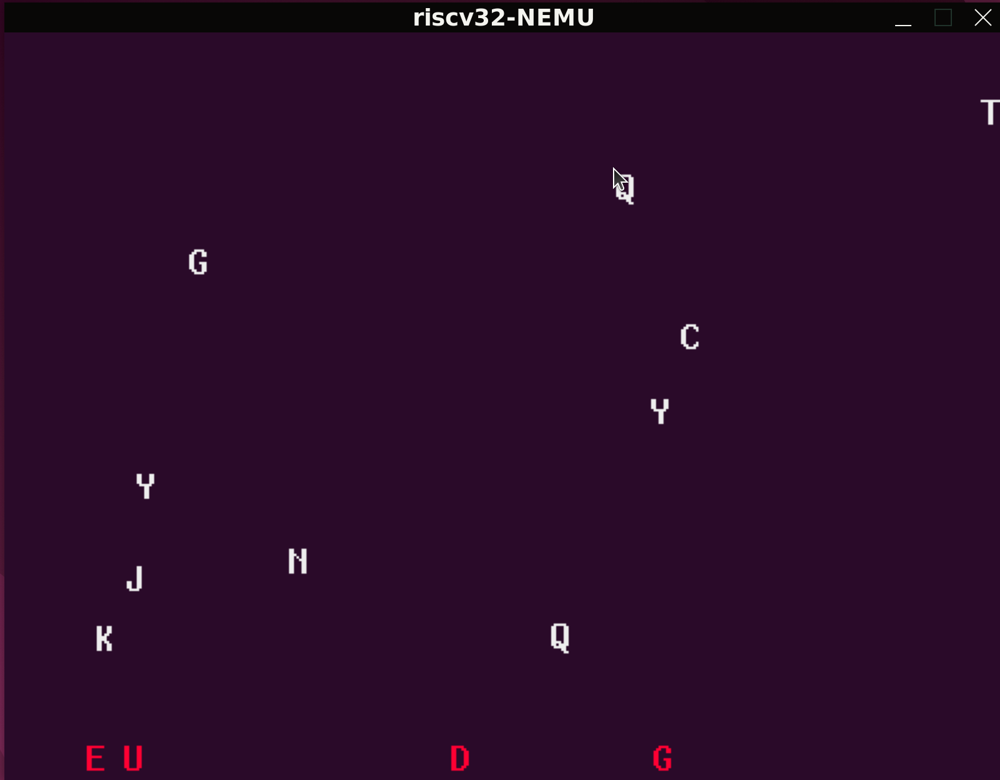
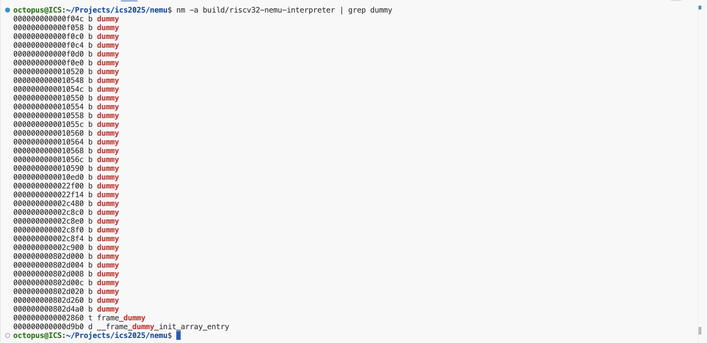
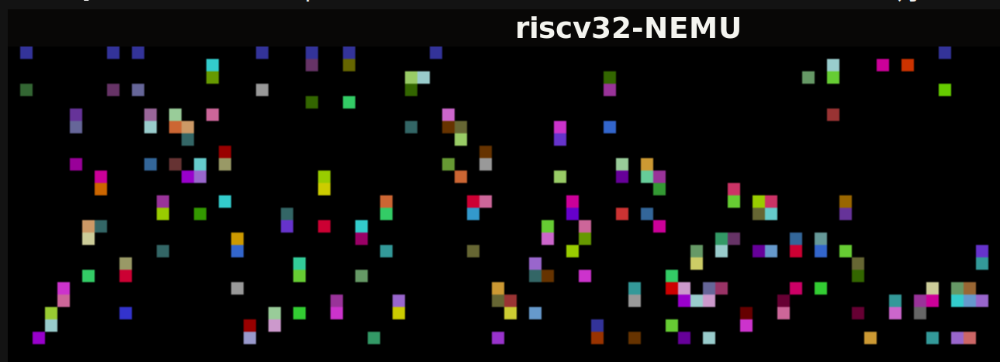
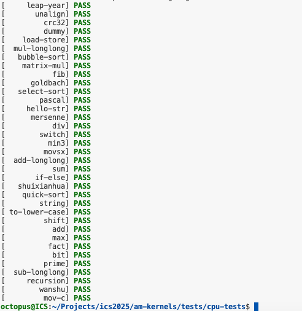
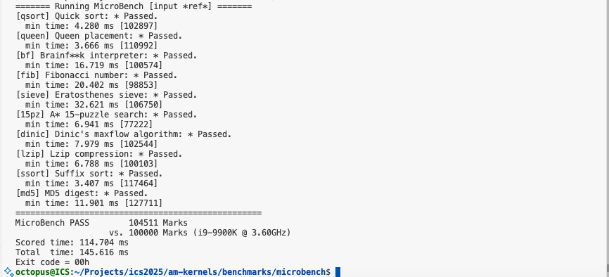
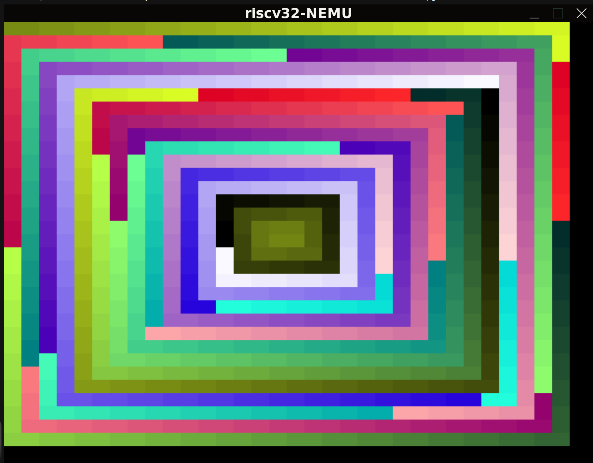

ICS_PA2 实验报告
实验进度
我已完成 PA2 的所有内容，并通过了所有的测试样例。
必答题
不停计算的机器
#include <stdint.h>
#include <stdio.h>
#define NREG 4
#define NMEM 16
// 定义指令格式
typedef union {
struct { uint8_t rs : 2, rt : 2, op : 4; } rtype;
struct { uint8_t addr : 4 , op : 4; } mtype;
uint8_t inst;
} inst_t;
#define DECODE_R(inst) uint8_t rt = (inst).rtype.rt, rs = (inst).rtype.rs
#define DECODE_M(inst) uint8_t addr = (inst).mtype.addr
uint8_t pc = 0; // PC, C语言中没有4位的数据类型, 我们采用8位类型来表示
uint8_t R[NREG] = {}; // 寄存器
uint8_t M[NMEM] = { // 内存, 其中包含一个计算z = x + y的程序
0b11100110, // load 6# | R[0] <- M[y]
0b00000100, // mov r1, r0 | R[1] <- R[0]
0b11100101, // load 5# | R[0] <- M[x]
0b00010001, // add r0, r1 | R[0] <- R[0] + R[1]
0b11110111, // store 7# | M[z] <- R[0]
0b00010000, // x = 16
0b00100001, // y = 33
0b00000000, // z = 0
};
int halt = 0; // 结束标志
// 执行一条指令
void exec_once() {
inst_t this;
this.inst = M[pc]; // 取指
switch (this.rtype.op) {
// 操作码译码 操作数译码 执行
case 0b0000: { DECODE_R(this); R[rt] = R[rs]; break; }
case 0b0001: { DECODE_R(this); R[rt] += R[rs]; break; }
case 0b1110: { DECODE_M(this); R[0] = M[addr]; break; }
case 0b1111: { DECODE_M(this); M[addr] = R[0]; break; }
default:
printf("Invalid instruction with opcode = %x, halting...\n", this.rtype.op);
halt = 1;
break;
}
pc ++; // 更新PC
}
int main() {
while (1) {
exec_once();
if (halt) break;
}
printf("The result of 16 + 33 is %d\n", M[7]);
return 0;
}
问题： 画出在YEMU上执行的加法程序的状态机
Solution:
$$\begin{aligned} \text{State}_0 &: (PC=0, R[0]=0, R[1]=0, M[7]=0) \ &\downarrow \text{ (load 6#: } R[0] \leftarrow 33) \ \text{State}_1 &: (PC=1, R[0]=33, R[1]=0, M[7]=0) \ &\downarrow \text{ (mov r1, r0: } R[1] \leftarrow 33) \ \text{State}_2 &: (PC=2, R[0]=33, R[1]=33, M[7]=0) \ &\downarrow \text{ (load 5#: } R[0] \leftarrow 16) \ \text{State}_3 &: (PC=3, R[0]=16, R[1]=33, M[7]=0) \ &\downarrow \text{ (add r0, r1: } R[0] \leftarrow 16+33=49) \ \text{State}_4 &: (PC=4, R[0]=49, R[1]=33, M[7]=0) \ &\downarrow \text{ (store 7#: } M[7] \leftarrow 49) \ \text{State}_5 &: (PC=5, R[0]=49, R[1]=33, M[7]=49) \ \end{aligned}$$
问题： 通过RTFSC理解YEMU如何执行一条指令
Solution:
YEMU的指令执行周期（在 exec_once() 函数中）遵循经典的冯·诺依曼周期：取指 (Fetch) -> 译码 (Decode) -> 执行 (Execute) -> 更新PC (Update PC)。
** 1. 取指 (Fetch)**
inst_t this;
this.inst = M[pc]; // 取指
- 指令存储在内存
M中。 - 程序计数器
pc给出下一条要执行的指令的地址。 M[pc]的内容（一个 $\text{uint8_t}$ 值）被取出并存储在this联合体中。
** 2. 译码 (Decode) 和 执行 (Execute)**
指令的译码和执行是通过 switch (this.rtype.op) 结构完成的，它首先通过 inst_t 联合体的 rtype 结构体字段 op 提取操作码 (Opcode)。
Opcode (this.rtype.op) |
指令类型 | 译码宏 (Operands) | 执行操作 (Execution) | 汇编指令 | 含义 |
|---|---|---|---|---|---|
| $\text{0b0000}$ (0) | R-type | DECODE_R ($r_t, r_s$) |
$R[r_t] = R[r_s]$ | mov rt, rs |
寄存器间传输 |
| $\text{0b0001}$ (1) | R-type | DECODE_R ($r_t, r_s$) |
$R[r_t] += R[r_s]$ | add rt, rs |
寄存器加法 |
| $\text{0b1110}$ (14) | M-type | DECODE_M ($addr$) |
$R[0] = M[addr]$ | load addr\# |
从内存加载到 $R[0]$ |
| $\text{0b1111}$ (15) | M-type | DECODE_M ($addr$) |
$M[addr] = R[0]$ | store addr\# |
从 $R[0]$ 存储到内存 |
- R-type 指令 (
mov,add): 使用 $r_type$ 结构体的 $r_t$ (目标寄存器) 和 $r_s$ (源寄存器) 字段来操作寄存器 $R[]$ 中的值。 - M-type 指令 (
load,store): 使用 $m_type$ 结构体的 $addr$ (内存地址) 字段来操作内存 $M[]$ 和寄存器 $R[0]$ (隐含目标/源)。
** 3. 错误处理 (Invalid Opcode)**
default:
printf("Invalid instruction with opcode = %x, halting...\n", this.rtype.op);
halt = 1;
break;
- 如果取出的指令的操作码不匹配任何已定义的指令（0, 1, 14, 15），则设置
halt = 1标志并打印错误信息，从而导致程序停止运行。
** 4. 更新PC (Update PC)**
pc ++; // 更新PC
- 无论是成功执行了一条指令，还是遇到了无效指令并设置了
halt标志，程序计数器pc都会简单地递增 1，指向内存中的下一个字节。
RTFSC(2)
问题： 请整理一条指令在NEMU中的执行过程
Solution 指令执行流程
1. 启动执行 (cpu_exec)
-
cpu_exec(uint64_t n): 这是 CPU 模拟的入口函数，接收要执行的指令数量 $n$。void cpu_exec(uint64_t n) { g_print_step = (n < MAX_INST_TO_PRINT); // ITRAC/si 命令的条件 switch (nemu_state.state) { case NEMU_END: case NEMU_ABORT: case NEMU_QUIT: /* ... 状态检查 ... */ return; default: nemu_state.state = NEMU_RUNNING; // 设置运行状态 } uint64_t timer_start = get_time(); // 记录起始时间 execute(n); // **进入执行循环** uint64_t timer_end = get_time(); g_timer += timer_end - timer_start; // 更新耗时 /* ... 结束状态处理和统计 ... */ }
2. 执行循环 (execute)
-
execute(uint64_t n): 循环 $n$ 次，在每次迭代中执行一条指令。static void execute(uint64_t n) { Decode s; for (;n > 0; n --) { exec_once(&s, cpu.pc); // 执行单条指令 g_nr_guest_inst ++; // 指令计数更新 trace_and_difftest(&s, cpu.pc); // 追踪、对比、检查监视点 if (nemu_state.state != NEMU_RUNNING) break; // 检查状态，若暂停/结束则退出循环 IFDEF(CONFIG_DEVICE, device_update()); // 设备更新 } }
3. 单步执行 (exec_once)
这是执行一条指令的核心步骤：
| 步骤 | 函数/宏 | 描述 | 对应的代码片段 (exec_once) |
|---|---|---|---|
| I. 设置 PC | s->pc = pc; |
将当前的 程序计数器 (PC) 存入 Decode 结构体 $s$ 中。 |
s->pc = pc; |
| II. 指令解码与执行 | isa_exec_once(s); |
ISA 相关操作。 负责取指、解码、执行指令，并计算出下一条指令的地址 (Next PC, s->dnpc)。 |
isa_exec_once(s); |
| III. 更新 PC | cpu.pc = s->dnpc; |
将 CPU 的全局 PC 更新为执行结果计算出的 下一条指令地址 (s->dnpc)。 |
cpu.pc = s->dnpc; |
| IV. FTRACE | CONFIG_FTRACE, ftrace_log(...) |
函数调用追踪：记录函数调用和返回信息。 | #ifdef CONFIG_FTRACE ... ftrace_log(...) ... #endif |
| V. ITRACE/IRINGBUF | CONFIG_ITRACE, push_iringbuf(...) |
指令追踪：格式化指令信息（机器码、汇编）并存入日志缓冲区 s->logbuf，然后推入环形缓冲区。 |
#ifdef CONFIG_ITRACE ... disassemble(...) ... push_iringbuf(...) ... #endif |
4. 追踪与检查 (trace_and_difftest)
在 exec_once 之后，execute 函数调用 trace_and_difftest：
static void trace_and_difftest(Decode *_this, vaddr_t dnpc) {
#ifdef CONFIG_ITRACE_COND // CONFIG_ITRACE_COND 配置的追踪条件
if (ITRACE_COND) { log_write("%s\n", _this->logbuf); }
#endif
if (g_print_step) { IFDEF(CONFIG_ITRACE, puts(_this->logbuf)); } // MAX_INST_TO_PRINT 控制的单步输出
IFDEF(CONFIG_DIFFTEST, difftest_step(_this->pc, dnpc)); // **双机对比**
#ifdef CONFIG_WATCHPOINT // **监视点检查**
check_watchpoints();
if (nemu_state.state == NEMU_STOP) {
printf("Watchpoint triggered!\n");
}
#endif
}
5. 状态更新
- 指令计数更新:
g_nr_guest_inst ++; - 状态检查:
if (nemu_state.state != NEMU_RUNNING) break; - 设备更新 (DEVICE):
IFDEF(CONFIG_DEVICE, device_update());
6. 结束统计
-
执行循环结束后，
cpu_exec函数继续执行，并根据最终的nemu_state.state决定后续动作，最终调用statistic()打印统计数据：// cpu_exec // ... switch (nemu_state.state) { case NEMU_RUNNING: nemu_state.state = NEMU_STOP; break; // 执行完毕 n 条指令后，设为 NEMU_STOP case NEMU_END: case NEMU_ABORT: Log("nemu: %s at pc = " FMT_WORD, /* ... */); // fall through case NEMU_QUIT: statistic(); // 遇到 END/ABORT/QUIT 则打印统计数据 }
关键数据结构
-
CPU_state cpu: 全局变量，存储 CPU 寄存器状态和pc。CPU_state cpu = {}; -
Decode s: 局部变量，用于存储单条指令的执行上下文。Decode s; // 在 execute 函数内局部声明
程序如何运行
问题： 请你以打字小游戏为例, 结合"程序在计算机上运行"的两个视角, 来剖析打字小游戏究竟是如何在计算机上运行的. 具体地, 当你按下一个字母并命中的时候, 整个计算机系统(NEMU, ISA, AM, 运行时环境, 程序) 是如何协同工作, 从而让打字小游戏实现出"命中"的游戏效果?
Solution  微观视角(程序) 1. 程序结构和逻辑
打字小游戏的核心是事件驱动和帧同步的循环：
- 数据结构:
struct character chars[NCHAR]存储了屏幕上每个下落字母的状态（字符、位置x, y、速度v、状态计时t）。 - 游戏主循环 (
main):- 通过
io_read(AM_TIMER_UPTIME).us获取当前时间，计算出应该渲染的帧数 (frames)，实现帧同步。 - 更新逻辑 (
game_logic_update): 在current < frames的循环中，模拟字母下落、生成新字母、判断输入字母是否正确等游戏逻辑。 - 输入处理 (
io_read(AM_INPUT_KEYBRD)): 循环读取键盘事件，并调用check_hit函数处理按键。 - 渲染 (
render): 当有新的逻辑更新时 (current > rendered)，调用render将新的游戏状态绘制到屏幕。
- 通过
2. “命中”事件的程序逻辑
当按下键盘上一个字母（如 ‘A’）时：
-
读取输入:
// main 函数中的输入处理 AM_INPUT_KEYBRD_T ev = io_read(AM_INPUT_KEYBRD); if (ev.keydown && lut[ev.keycode]) { check_hit(lut[ev.keycode]); // 调用命中检测 }程序通过
io_read(AM_INPUT_KEYBRD)接口从抽象的输入设备获取按键事件 (ev)。如果是一个有效的按下事件 (ev.keydown)，则将原始键码 (ev.keycode) 通过查找表lut转换为字符，并传递给check_hit。 -
命中检测和更新状态 (
check_hit):void check_hit(char ch) { // 遍历所有字母，找到与按键匹配且正在下落的**最靠下**的字母 // ... 找到命中的字母索引 m if (m == -1) { wrong++; // 未命中 } else { hit++; chars[m].v = -(screen_h - CHAR_H + 1) / (FPS); // 关键：速度设为负值，使其向上飞出 } }- 程序遍历
chars数组，寻找字符c->ch与按键ch相同，并且速度c->v > 0（即正在下落）的字母。 - 为了符合“打中最快要掉落的”的游戏规则，它找到的是最靠下 (
c->y最大) 的那个。 - 命中效果实现: 将被击中字母的速度
chars[m].v设置为一个负值，使其开始向上飞出。
- 程序遍历
-
渲染命中效果 (
render):// render 函数中决定绘制颜色 int col = (c->v > 0) ? WHITE : (c->v < 0 ? GREEN : RED); io_write(AM_GPU_FBDRAW, c->x, c->y, texture[col][c->ch - 'A'], CHAR_W, CHAR_H, false);在下一个渲染周期，由于被命中的字母
c的速度c->v < 0，render函数会为其选择GREEN颜色，并使用io_write(AM_GPU_FBDRAW)将其绘制到屏幕上，从而实现了“字母变绿向上飞出”的命中视觉效果。
宏观视角
1. 抽象中间层 (AM)
AM (Abstract Machine) 提供了与底层硬件抽象接口，是连接上层程序和底层硬件/模拟器的桥梁。
-
输入抽象:
AM_INPUT_KEYBRD是对键盘硬件的抽象。- 当程序调用
io_read(AM_INPUT_KEYBRD)时，AM 会负责与键盘设备交互，获取按键的键码和状态（按下/松开），并以统一的AM_INPUT_KEYBRD_T结构体形式返回给程序。
-
图形抽象:
AM_GPU_FBDRAW是对显卡帧缓冲区 (Framebuffer) 的抽象。- 当程序调用
io_write(AM_GPU_FBDRAW, ...)时，AM 会负责将像素数据写入显卡的内存区域，驱动显示更新。
2. 指令集架构 (ISA)
无论是程序逻辑 (check_hit 中的比较和赋值) 还是 AM 接口的调用，最终都编译成目标 ISA（如 RISC-V）的机器指令。
- 例如，在
check_hit中将速度设置为负数的 C 代码：将被编译器翻译成一系列的 ISA 指令（如加载、减法、除法、取反、存储等），通过这些指令这些指令操作寄存器和内存。chars[m].v = -(screen_h - CHAR_H + 1) / (FPS);
3. 执行环境 (NEMU)
NEMU (NJU EMUlator) 是一个指令集模拟器，它负责模拟一个真实 CPU 的行为，执行上述 ISA 指令。
- 执行程序逻辑: NEMU 逐条取指、译码、执行，完成
check_hit内部的逻辑判断和数据修改（如修改chars[m].v的内存值）。 - 模拟 I/O 交互 (I/O Mapped Memory / Memory Mapped I/O):
- 当程序执行到涉及
io_read或io_write的指令时，它实际上是在访问一个特定的内存地址（即设备寄存器）。 - 读取输入: 当 NEMU 发现 CPU 试图读取键盘设备寄存器时（通过 AM 抽象），NEMU 会暂停模拟，查询主机操作系统的键盘事件，并根据事件状态伪造一个设备返回值（
AM_INPUT_KEYBRD_T），模拟键盘数据准备就绪。 - 渲染输出: 当 NEMU 发现 CPU 试图写入帧缓冲区地址时（通过
io_write(AM_GPU_FBDRAW, ...)），NEMU 会将该数据转发到主机操作系统的图形界面上，实现屏幕像素的更新。
- 当程序执行到涉及
编译与链接
问题： 分别尝试去掉static, 去掉inline或去掉两者, 然后重新进行编译,请分别解释为什么这些错误会发生/不发生?
#ifndef __CPU_IFETCH_H__
#include <memory/vaddr.h>
static inline uint32_t inst_fetch(vaddr_t *pc, int len) {
uint32_t inst = vaddr_ifetch(*pc, len);
(*pc) += len;
return inst;
}
#endif
Solution
单独去掉 static (保留 inline)
- 结果： 不报错 (链接器处理)。
- 原因：
inline函数在头文件中定义且为外部链接。现代链接器（如 GNU ld）会将多个目标文件中生成的函数定义视为弱符号，并自动选择其中一个作为最终的外部定义，避免了多重定义错误。
单独去掉 inline (保留 static)
- 结果： 不报错 (内部链接)。
- 原因：
static将函数的链接性限制为内部链接。每个包含该头文件的.c文件都会拥有一个该函数的私有副本，互相隔离，链接器看不到冲突的符号。
同时去掉两者
- 结果： 链接错误。
- 原因： 函数成为一个普通的外部链接函数。由于头文件被多个源文件包含，链接器会在最终的可执行文件中发现多个目标文件都定义了同名的强符号，违反了 C 语言的单一定义原则（One Definition Rule, ODR），导致
multiple definition链接错误。
问题：
- 1.在nemu/inclu/common.h中添加一行volatile static int dummy; 然后重新编译NEMU. 请问重新编译后的NEMU含有多少个dummy变量的实体? 你是如何得到这个结果的?
- 2.添加上题中的代码后, 再在nemu/include/debug.h中添加一行volatile static int dummy; 然后重新编译NEMU. 请问此时的NEMU含有多少个dummy变量的实体? 与上题中dummy变量实体数目进行比较, 并解释本题的结果.
- 3.修改添加的代码, 为两处dummy变量进行初始化:volatile static int dummy = 0; 然后重新编译NEMU. 你发现了什么问题? 为什么之前没有出现这样的问题? (回答完本题后可以删除添加的代码.)
Solution
- 1.添加代码并编译后，在nemu目录下终端输入
nm -a build/riscv32-nemu-interpreter | grep dummy -c返回36  - 2.重复上问步骤，依旧返回36
volatile static int dummy;未初始化的缘故，dummy是暂定定义。在单个 .c 文件中，即使通过包含多个头文件看到多次相同的定义，编译器也会将它们合并为一个实体。所以依旧含有36个dummy变量的实体 - 3.添加代码后编译出现错误
octopus@ICS:~/Projects/ics2025/nemu$ make
+ CC src/nemu-main.c
In file included from /home/octopus/Projects/ics2025/nemu/include/utils.h:19,
from /home/octopus/Projects/ics2025/nemu/include/debug.h:21,
from /home/octopus/Projects/ics2025/nemu/include/common.h:47,
from src/nemu-main.c:16:
/home/octopus/Projects/ics2025/nemu/include/common.h:57:21: error: redefinition of ‘dummy’
57 | volatile static int dummy = 0;
| ^~~~~
In file included from /home/octopus/Projects/ics2025/nemu/include/debug.h:19,
from /home/octopus/Projects/ics2025/nemu/include/common.h:47,
from src/nemu-main.c:16:
/home/octopus/Projects/ics2025/nemu/include/common.h:57:21: note: previous definition of ‘dummy’ was here
57 | volatile static int dummy = 0;
| ^~~~~
In file included from /home/octopus/Projects/ics2025/nemu/include/common.h:47,
from src/nemu-main.c:16:
/home/octopus/Projects/ics2025/nemu/include/debug.h:44:21: error: redefinition of ‘dummy’
44 | volatile static int dummy = 0;
| ^~~~~
In file included from /home/octopus/Projects/ics2025/nemu/include/utils.h:19,
from /home/octopus/Projects/ics2025/nemu/include/debug.h:21,
from /home/octopus/Projects/ics2025/nemu/include/common.h:47,
from src/nemu-main.c:16:
/home/octopus/Projects/ics2025/nemu/include/common.h:57:21: note: previous definition of ‘dummy’ was here
57 | volatile static int dummy = 0;
| ^~~~~
In file included from src/nemu-main.c:16:
/home/octopus/Projects/ics2025/nemu/include/common.h:57:21: error: redefinition of ‘dummy’
57 | volatile static int dummy = 0;
| ^~~~~
In file included from /home/octopus/Projects/ics2025/nemu/include/common.h:47,
from src/nemu-main.c:16:
/home/octopus/Projects/ics2025/nemu/include/debug.h:44:21: note: previous definition of ‘dummy’ was here
44 | volatile static int dummy = 0;
| ^~~~~
make: *** [/home/octopus/Projects/ics2025/nemu/scripts/build.mk:34: /home/octopus/Projects/ics2025/nemu/build/obj-riscv32-nemu-interpreter/src/nemu-main.o] Error 1
octopus@ICS:~/Projects/ics2025/nemu$
未初始化时不报错，而现在初始化后报错，根本原因在于变量的定义方式：
-
-
未初始化时（
volatile static int dummy;）：dummy为暂定定义,即没有存储类说明符和初始化方法的任何外部数据声明。- 在同一个编译单元（单个
.c文件经过预处理后）内，可以出现同一个变量的多个暂定定义，编译器会将它们合并成一个变量实体。因此，重复包含头文件不会报错。
-
-
-
初始化后（
volatile static int dummy = 0;）：- 对全局变量进行初始化（例如
= 0）的行为，在 C 语言中构成一个强定义。 - C 语言规范要求，在单个编译单元（即单个
.c文件）中，不允许对同一个变量进行多次强定义。 - 这违反了“单一定义原则”，因此编译器立即报错
redefinition of 'dummy'。
- 对全局变量进行初始化（例如
-
了解Makefile
问题： 请描述你在am-kernels/kernels/hello/目录下敲入make ARCH=$ISA-nemu 后, make程序如何组织.c和.h文件, 最终生成可执行文件am-kernels/kernels/hello/build/hello-$ISA-nemu.elf. (这个问题包括两个方面:Makefile的工作方式和编译链接的过程.) 关于Makefile工作方式的提示:
- Makefile中使用了变量, 包含文件等特性
- Makefile运用并重写了一些implicit rules
- 在man make中搜索-n选项, 也许会对你有帮助
- RTFM
Solution
1.Makefile 的工作方式
在 am-kernels/kernels/hello/ 目录下执行 make ARCH=$ISA-nemu 后，make 程序会按照以下步骤组织和执行：
目标与变量确定
- 加载本地 Makefile：首先加载
am-kernels/kernels/hello/Makefile。- 变量设置：
NAME = hello,SRCS = hello.c。
- 变量设置：
- 包含通用 Makefile：通过
include $(AM_HOME)/Makefile包含 AbstractMachine 的通用 Makefile。通用 Makefile 中的规则和变量开始生效。 - 确定目标：由于命令行没有指定目标 (
MAKECMDGOALS为空)，根据通用 Makefile 中的设置，默认目标为image(MAKECMDGOALS = image,.DEFAULT_GOAL = image)。 - 环境检查和变量解析：
- 通过
ARCH_SPLIT和word函数，从ARCH=$ISA-nemu中解析出 ISA (riscv32) 和 PLATFORM (nemu)。 - 确定路径：
DST_DIR被设置为am-kernels/kernels/hello/build/$ARCH-nemu。 - 确定最终文件：
IMAGE变量确定最终可执行文件的路径前缀，最终的 ELF 文件目标是$(IMAGE).elf，即am-kernels/kernels/hello/build/hello-$ISA-nemu.elf。 - 确定链接文件：
OBJS变量被设置为$(DST_DIR)/hello.o。LIBS变量包含am和klib。LINKAGE初始为$(OBJS)。
- 通过
- 导入架构特定配置：通过
-include $(AM_HOME)/scripts/$(ARCH).mk导入特定于$ISA-nemu的配置，例如编译器、链接脚本 (LDSCRIPTS) 和额外的编译/链接标志。
依赖递归与展开
- 链接依赖的展开：由于目标是
image，Makefile不会执行archive目标。LIB_TEMPLATE宏会为每个库 (am,klib) 生成一个依赖规则，目标是库的归档文件 (如$(AM_HOME)/am/build/am-$ARCH.a)。- 这些库的归档文件被添加到
LINKAGE中。 - 递归调用：当需要构建这些库归档文件时，
make会递归调用自身，进入库的目录 ($(AM_HOME)/am或$(AM_HOME)/klib)，并以archive为目标执行make(@$(MAKE) -s -C $(AM_HOME)/$(1) archive)。
- 构建顺序：
image->image-dep->$(IMAGE).elf。
2. C文件的编译链接过程
生成 am-kernels/kernels/hello/build/hello-$ISA-nemu.elf 文件主要经过以下三个阶段：
1. 编译
- 目标：将源代码文件
hello.c编译成目标文件$(DST_DIR)/hello.o(即am-kernels/kernels/hello/build/$ISA-nemu/hello.o)。 - 规则：使用通用 Makefile 中重写的编译规则：
$(DST_DIR)/%.o: %.c @mkdir -p $(dir $@) && echo + CC $< @$(CC) -std=gnu11 $(CFLAGS) -c -o $@ $(realpath $<) - 执行命令：
make会执行类似如下的命令：gcc -std=gnu11 -O2 -MMD -Wall -Werror [各种 -I<path> 头文件路径] [各种 -D<macro> 宏定义] -fno-builtin ... -c -o build/$ISA-nemu/hello.o hello.c$(CC)：使用交叉编译器（例如mips64-linux-gnu-gcc或riscv64-unknown-elf-gcc，取决于ARCH）。$(CFLAGS)：包含了优化选项 (-O2)、警告/错误选项 (-Wall -Werror)、头文件路径 (-I) 和重要的宏定义 (-D__ISA__等)；此外还有嵌入式/裸机编程常用的选项 (-fno-builtin,-fno-stack-protector)。-MMD：该选项指示编译器生成一个.d文件 (build/$ISA-nemu/hello.d)，其中包含目标文件hello.o对所有依赖头文件的信息。这个.d文件会被-include导入到 Makefile 中，从而实现头文件修改时，.o文件也能被正确地重新编译。
2. 归档
- 目标：将 AbstractMachine 内核和库（
am和klib）的源代码编译生成各自的静态库文件 (e.g.,$(AM_HOME)/am/build/am-$ARCH.a)。 - 规则：通过递归调用
make archive在各个库的目录下完成。
3. 链接
- 目标：将所有目标文件 (
hello.o) 和所有依赖的库文件 (am-$ARCH.a,klib-$ARCH.a) 链接起来，生成最终的 ELF 可执行文件$(IMAGE).elf。 - 规则：使用链接规则：
$(IMAGE).elf: $(LINKAGE) $(LDSCRIPTS) # ... @$(LD) $(LDFLAGS) -o $@ --start-group $(LINKAGE) --end-group - 执行命令：
make会执行类似如下的命令：ld -z noexecstack -T <link_script> -o build/hello-$ISA-nemu.elf --start-group \ build/$ISA-nemu/hello.o \ /path/to/am/build/am-$ISA-nemu.a \ /path/to/klib/build/klib-$ISA-nemu.a \ --end-group$(LD)：使用交叉链接器。$(LDFLAGS)：包含LDSCRIPTS变量指定的链接脚本 (-T)。它定义了代码段、数据段在内存中的布局、入口点等信息。$(LINKAGE)：包含所有.o文件和.a库文件。--start-group ... --end-group：确保库文件之间如果存在相互依赖，链接器也能正确解析所有符号。
至此，am-kernels/kernels/hello/build/hello-$ISA-nemu.elf 可执行文件生成完成。
思考题
 RISC-V 提供了专门的指令来高效地加载 32 位常数：
RISC-V 提供了专门的指令来高效地加载 32 位常数：
- LUI (Load Upper Immediate): 加载高 20 位立即数。
- ADDI (Add Immediate): 加载低 12 位立即数（并进行符号扩展）。
 测试返回：
测试返回：

有趣的瞬间








实验心情
😊 感觉良好